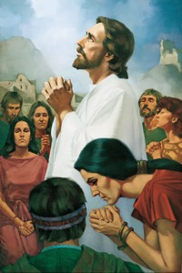
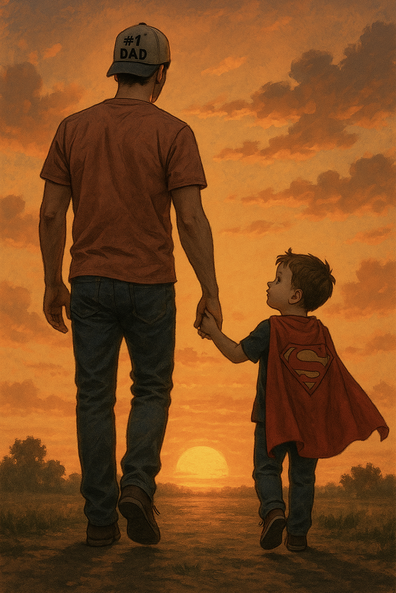
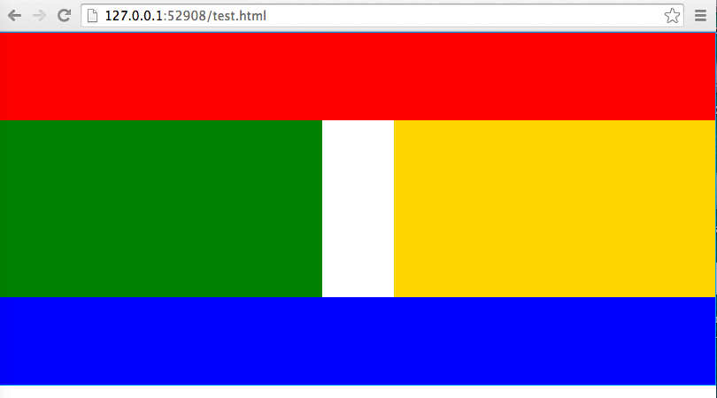

Image Gallery
I practiced using image links, thumbnails, hover effects, and a simple CSS grid gallery.
Open ChallengeIn-Class Exercises
This page collects my ICE challenge assignments. Each challenge helped me practice a different part of building web pages, from layout to images to CSS positioning.

I practiced using image links, thumbnails, hover effects, and a simple CSS grid gallery.
Open Challenge
I worked with page sections, images, navigation, and styling a themed page with CSS.
Open ChallengeI learned how CSS Grid can create precise shapes, columns, rows, and flag layouts.
Open Challenge
I practiced positioning elements with grid, float, rows, columns, and layered layouts.
Open Challenge
I practiced card layout, image organization, responsive grids, and visual hierarchy.
Open Challenge
I practiced building a focused profile card with lists, links, images, and typography.
Open Challenge